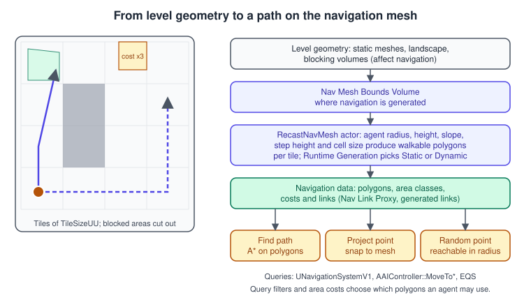
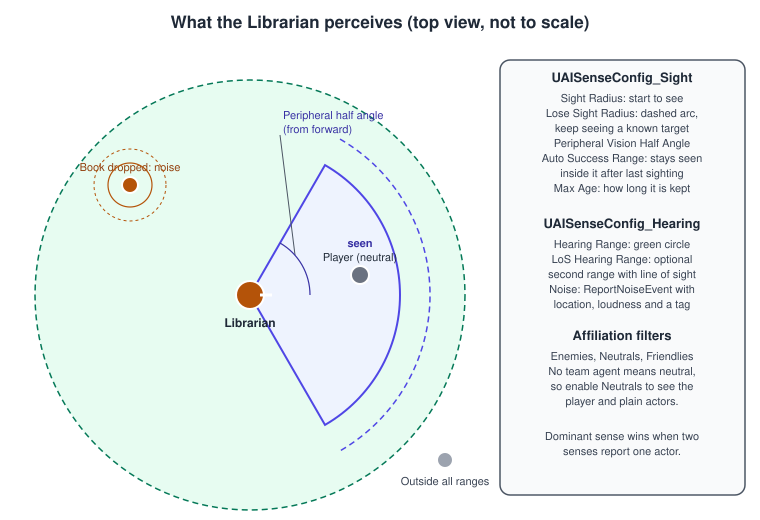
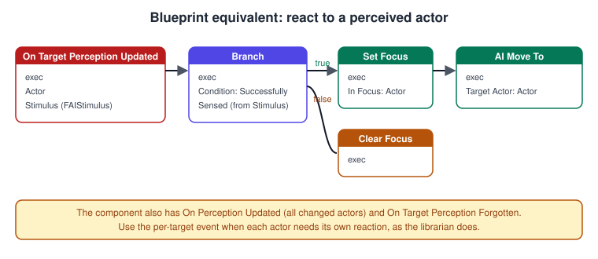
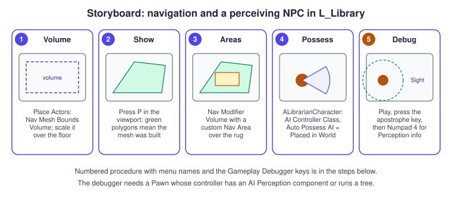

AI, Navigation and Perception
|
This content was generated with the assistance of AI and should be verified against the official documentation before being relied on in production. |
A non-player character needs three abilities before it can do anything interesting: it must know where it can walk, it must be able to get from one place to another, and it must notice what happens around it. Unreal Engine provides one system for each. The navigation system builds a navigation mesh (NavMesh) from the level and answers path queries. An AI controller is the non-physical "brain" that possesses a pawn and asks the navigation system to move it. The AI Perception system gives the controller senses (sight, hearing, damage and others) and tells it when something was sensed. What the character decides to do with this information is the job of behaviour trees or StateTree, covered in Behavior Trees and StateTree; thousands of simple agents are the subject of Mass Entity.
The facts on this page were checked in November 2026 against the Unreal Engine 5.8 documentation (released 2026-06-17; the
latest hotfix found is 5.8.4). Navigation and perception are part of the engine on every platform. The running example is the
Bookshelf librarian: ALibrarianCharacter, driven by ALibrarianAIController, patrols the library level L_Library,
notices the player with sight, hears a book hit the floor, and walks to the noise. The next page turns this reactive controller
into a decision-making one with the StateTree ST_Librarian. The engine-neutral idea of an agent that senses, decides and
acts is in Entity Component System for the data-oriented side; the Unity counterpart is
Navigation and AI.
The navigation mesh

A Nav Mesh Bounds Volume marks the region in which navigation is generated. It affects only path building: it has no gameplay
collision. Within the volume, the engine builds a navigation mesh on every surface whose slope an agent can walk on. Adding a volume
to a level, or resizing it, creates a navigation data actor named RecastNavMesh-Default and starts generating the mesh
automatically; there is no manual bake step. Several overlapping volumes cover an irregular area. Press P in the editor viewport
to display the mesh as green polygons, and use Show > Navigation (or the console command show Navigation) to toggle it in a
running game. Engine-wide, the navigation mesh is built with the Recast library, and ARecastNavMesh is the actor that holds it
and exposes its settings.
RecastNavMesh settings
Select RecastNavMesh-Default in the Outliner to edit it. The properties that matter most:
| Setting | Meaning |
|---|---|
Agent Radius, Agent Height |
Size of the smallest agent that can traverse the mesh and of the tallest agent that will path with it. Narrow gaps and low ceilings are removed from the mesh according to them. |
Agent Max Slope |
Steepest slope an agent can walk on, clamped to 0 to 89 degrees. |
Tile Size UU |
Edge length of a navmesh tile in Unreal units, at least 300. The mesh is generated and rebuilt per tile. |
NavMesh Resolution Params |
Cell size and related values for each resolution (High, Default, Low). Cell Size, Cell Height and Agent Max Step Height are set per resolution in current versions and their older top-level properties are deprecated. The Default resolution is used when no other is chosen, and a bigger cell size generates faster. |
Runtime Generation |
Static builds in the editor only; Dynamic Modifiers Only rebuilds tiles when nav modifiers change; Dynamic also rebuilds when navigation-relevant geometry moves or spawns. |
Is World Partitioned Navmesh |
Splits the mesh into chunks that stream with World Partition cells (see below). |
Display options |
Draw Poly Edges, Draw Tile Bounds, Draw Tile Build Times, Draw Tile Resolutions and a build-time heat map help to find expensive tiles. |
Resolution is a per-area decision: set Nav Mesh Resolution on a Nav Modifier Volume (or a Nav Modifier component) to give a tight indoor area more precision, or a wide yard less. Low resolution generates faster and uses less memory (suited to mobile) but can remove paths between close obstacles; Default and High approximate tight spaces better at the cost of generation time and memory. The Tile Size UU should be divisible by all the cell sizes for best performance.
Areas, costs and filters
The mesh is divided into areas. Every polygon belongs to an area class, which sets its traversal cost and who may use it. A path’s
cost is the sum of the costs of the areas it crosses, and the pathfinder prefers the cheapest route, so a high cost discourages a
path without forbidding it when nothing cheaper exists. The built-in classes include NavArea_Null (no navigation data inside, so
impassable) and NavArea_Obstacle (very high cost, to be used only if there is no other way).
-
A Nav Modifier Volume applies an Area Class to the region inside its shape; a Nav Modifier component does the same for an actor whose root is a basic shape (use one per actor).
SetAreaClasschanges the class at run time. -
Create your own area with a Blueprint class derived from Nav Area and adjust Default Cost, Fixed Area Entering Cost and Draw Color; the Bookshelf uses one for the rug area, which the librarian prefers to walk around.
-
A Navigation Query Filter is a Blueprint class (
UNavigationQueryFilter) with an Areas list in which each area class can override its Travel Cost; included and excluded flags decide which polygons are allowed. An agent selects its filter through Filter Class (and AI move calls take a filter class too), so two agents can walk the same mesh with different preferences.
Links, jumps and generated links
A navigation mesh only connects what is physically contiguous. To let an agent cross a gap, jump off a ledge or use a ladder, add a Nav Link Proxy: its point links define one-way or two-way connections between two points, and a smart link can be enabled or disabled at run time and raises an event when an agent reaches it. Since UE 5.5 the engine can also generate links automatically: enable Generate Nav Links on the RecastNavMesh-Default actor under Generation and tune the Nav Link Jump Down Config (jump length, distance from edge, maximum depth and height, tolerance, sampling separation, filter distance, area class and link proxy class). The documentation labels the feature Experimental, and it adds CPU cost to tile generation, so keep the jump length reasonable.
Large worlds: invokers and World Partition
A large level cannot keep all of its navigation in memory. A Navigation Invoker component generates navigation tiles around its actor at run time: enable Project Settings > Navigation System > Generate Navigation Only Around Navigation Invokers, set Runtime Generation to Dynamic, cover the floor with a Nav Mesh Bounds Volume and add the component to each agent. Its Tile Generation Radius sets where tiles are built and its Tile Removal Radius (larger than the generation radius) where they are discarded. An optional Invokers Maximum Distance from Seed limits which invokers cause generation at all.
For World Partition levels, the navigation mesh can be split into chunk actors that stream with the world cells. Enable Is World
Partitioned Navmesh on RecastNavMesh-Default, use an Open World level, and choose a runtime generation mode (Static, Dynamic Modifiers Only and Dynamic are all supported).
Set n.bNavmeshAllowPartitionedBuildingFromEditor 1 and use Build > Build Paths to build it in the editor. The documentation labels this feature Experimental. See
World Partition and PCG for the streaming grid that these chunks follow.
Querying the navigation system from C++
UNavigationSystemV1 (header NavigationSystem.h, module NavigationSystem) answers queries for a world: GetCurrent returns it, and its
member functions include GetRandomReachablePointInRadius, ProjectPointToNavigation and TestPathSync (does a path exist, without building one).
FindPathToLocationSynchronously and FindPathToActorSynchronously return a path immediately, and GetPathLength is
potentially expensive. Use them for decisions such as picking a patrol point; use the AI controller’s move functions to actually walk.
AI controllers and path following
An AI controller (AAIController) is a AController without a player. It possesses a pawn, owns the AI components (path following,
perception, a behaviour tree or StateTree component, a blackboard) and survives the pawn dying. A pawn chooses its controller with
AIControllerClass and AutoPossessAI (Placed in World or Spawned is the usual setting). The framework relationships are covered in
Gameplay Framework; the key point here is that the controller, not the character, decides.
The flow below shows how the librarian controller reacts to stimuli and moves.
Moving. AAIController::MoveToLocation and MoveToActor request a path and start path following; both cancel a move that is in progress and return an
EPathFollowingRequestResult (Failed, AlreadyAtGoal or RequestSuccessful). Their parameters are the goal, an acceptance radius
(how close counts as arrived), whether to stop when overlapping the goal, whether to use pathfinding (without it the pawn moves in a straight line), whether to project the destination
onto the navigation mesh (location version), whether the pawn may strafe, a filter class (the default filter applies when empty) and whether a partial path is acceptable. The result of a move is
reported by OnMoveCompleted(FAIRequestID, const FPathFollowingResult&), which you override; in Blueprint the AI Move To node has success and fail outputs. The UPathFollowingComponent
(reached with GetPathFollowingComponent) does the walking, and GetMoveStatus tells you what it is doing. SetFocus makes the pawn face an actor (with a priority) and ClearFocus releases it.
Avoiding other agents. Two systems exist and the documentation says to use them exclusively, not together. RVO avoidance is a setting of the Character Movement component (Use RVOAvoidance, Avoidance Consideration Radius): it works on
any ACharacter, does not use the navigation mesh, is less configurable and can push agents off the mesh. Detour Crowd uses the DetourCrowdAIController class (set it as the AI Controller Class) and works with any pawn, uses adaptive sampling with path-corridor optimisation, and has a fixed maximum number of agents set in Project Settings > Crowd Manager (Max Agents, Max Agent Radius). For thousands of agents, see
Mass Entity instead.
AI Perception

The AI Perception system has three kinds of participant. A listener is an UAIPerceptionComponent, normally on the AI controller, which registers
with the perception system and collects the stimuli it receives. A stimuli source is something that can be sensed, such as a pawn or a book. A sense
(UAISense and its subclasses) turns the world into stimuli and delivers them in batches. Each sense a listener cares about is
configured with a UAISenseConfig object added to the component.
| Sense | What it does |
|---|---|
Sight ( |
Notices actors inside a cone with line of sight. Settings: Sight Radius (distance at which a target can start to be seen, in centimetres), Lose Sight Radius (distance beyond which a seen target is lost), Peripheral Vision Half Angle Degrees (measured from the forward vector, changeable at run time with |
Hearing ( |
Detects noise events. Settings: Hearing Range, and an optional LoS Hearing Range (with Use LoS Hearing). Noise is reported with |
Damage |
Reacts to Event Any Damage, Event Point Damage and Event Radial Damage. |
Touch, Team, Prediction |
Touch fires when the agent bumps into something; Team tells the owner a teammate is near (the radius is sent by gameplay code); Prediction supplies the predicted location of an actor a given time ahead. |
Settings common to all senses are Max Age (how long a stimulus is remembered; 0 means never forgotten), Debug Color and Starts Enabled. Detection by
Affiliation has three flags, Detect Enemies, Detect Neutrals and Detect Friendlies; affiliation comes from IGenericTeamAgentInterface (set the controller’s team with
SetGenericTeamId), and an actor with no team is neutral, so enable Detect Neutrals to perceive the player and plain actors. The component’s Dominant Sense decides which sense wins when several report the same actor’s location.
Sources. The sight sense has an option that registers newly spawned pawns as sources automatically, but any other actor, such as a book, must register: add an
UAIPerceptionStimuliSourceComponent, set Auto Register as Source and list the senses in Register as Source for Senses (or call RegisterForSense,
RegisterWithPerceptionSystem, UnregisterFromSense and UnregisterFromPerceptionSystem in code once the actor is in the world).
Events. OnTargetPerceptionUpdated(AActor*, FAIStimulus) fires per target when a stimulus arrives or its state changes;
OnPerceptionUpdated returns an array of changed actors; OnTargetPerceptionInfoUpdated and OnTargetPerceptionForgotten cover the rest. The FAIStimulus has
StimulusLocation, ReceiverLocation, Strength, Tag, Type (an FAISenseID), GetAge() and WasSuccessfullySensed(). Queries include GetCurrentlyPerceivedActors,
GetKnownPerceivedActors (not yet forgotten), GetActorsPerception, SetSenseEnabled and ForgetAll. Enable Project Settings > Engine > AI System > Forget Stale Actors
so that Max Age really removes old actors.

Complete example: the Bookshelf librarian
The code below has five parts: the noise helper that books call when they hit the floor, the book’s sight registration, the character, and the controller
with perception and movement. It assumes the module log category LogBookshelf (declared with DECLARE_LOG_CATEGORY_EXTERN in Bookshelf.h and defined in Bookshelf.cpp), and that Bookshelf.Build.cs lists
AIModule, NavigationSystem and GameplayTasks among its dependencies (see the module section of
Project Structure and Modules).
// BookshelfAINoise.h
#pragma once
#include "CoreMinimal.h"
class AActor;
namespace BookshelfAI
{
/** Tag carried by the hearing stimulus of a dropped book. */
BOOKSHELF_API extern const FName BookDroppedTag;
/** Makes a noise at the book's location that hearing listeners can pick up. */
BOOKSHELF_API void ReportBookDropped(AActor* Book, float Loudness = 1.f);
}// BookshelfAINoise.cpp
#include "BookshelfAINoise.h"
#include "GameFramework/Actor.h"
#include "Perception/AISense_Hearing.h"
namespace BookshelfAI
{
const FName BookDroppedTag(TEXT("BookDropped"));
void ReportBookDropped(AActor* Book, float Loudness)
{
if (!Book)
{
return;
}
// WorldContext, location, loudness, instigator, max range (0 = unlimited), tag.
UAISense_Hearing::ReportNoiseEvent(Book, Book->GetActorLocation(), Loudness, Book, 0.f, BookDroppedTag);
}
}Books make themselves visible to sight with a stimuli source component. This excerpt belongs in the constructor of ABookActor (its other members are on the
Actors and Components page); StimuliSource is a TObjectPtr<UAIPerceptionStimuliSourceComponent> member.
// ABookActor constructor excerpt
#include "Perception/AIPerceptionStimuliSourceComponent.h"
#include "Perception/AISense_Sight.h"
ABookActor::ABookActor()
{
// ... mesh, rotating movement and the other components are created here ...
StimuliSource = CreateDefaultSubobject<UAIPerceptionStimuliSourceComponent>(TEXT("StimuliSource"));
StimuliSource->bAutoRegisterAsSource = true;
StimuliSource->RegisterAsSourceForSenses.Add(UAISense_Sight::StaticClass());
}// LibrarianCharacter.h
#pragma once
#include "CoreMinimal.h"
#include "GameFramework/Character.h"
#include "LibrarianCharacter.generated.h"
/** The librarian NPC: a Character whose brain is ALibrarianAIController. */
UCLASS()
class BOOKSHELF_API ALibrarianCharacter : public ACharacter
{
GENERATED_BODY()
public:
ALibrarianCharacter();
};// LibrarianCharacter.cpp
#include "LibrarianCharacter.h"
#include "GameFramework/CharacterMovementComponent.h"
#include "LibrarianAIController.h"
ALibrarianCharacter::ALibrarianCharacter()
{
AIControllerClass = ALibrarianAIController::StaticClass();
AutoPossessAI = EAutoPossessAI::PlacedInWorldOrSpawned;
// A walking NPC faces where it moves, and it is slower than the player.
bUseControllerRotationYaw = false;
GetCharacterMovement()->bOrientRotationToMovement = true;
GetCharacterMovement()->MaxWalkSpeed = 250.f;
}// LibrarianAIController.h
#pragma once
#include "CoreMinimal.h"
#include "AIController.h"
#include "Perception/AIPerceptionTypes.h"
#include "LibrarianAIController.generated.h"
class UAISenseConfig_Hearing;
class UAISenseConfig_Sight;
/** Senses the player and dropped books, and walks to where something happened. */
UCLASS()
class BOOKSHELF_API ALibrarianAIController : public AAIController
{
GENERATED_BODY()
public:
ALibrarianAIController();
/** The player while seen, otherwise null. */
AActor* GetSeenPlayer() const { return SeenPlayer.Get(); }
/** True after a book hit the floor and until the librarian has gone to look. */
bool HasPendingNoise() const { return bHasPendingNoise; }
/** Walks to the place of the last noise; returns false when no path was requested. */
bool InvestigateNoise();
/** Walks to a random reachable point near the librarian's current location. */
bool Wander(float Radius);
virtual void OnMoveCompleted(FAIRequestID RequestID, const FPathFollowingResult& Result) override;
protected:
virtual void BeginPlay() override;
private:
UFUNCTION()
void HandleTargetPerceptionUpdated(AActor* Actor, FAIStimulus Stimulus);
UPROPERTY(VisibleAnywhere, Category = "Perception")
TObjectPtr<UAISenseConfig_Sight> SightConfig;
UPROPERTY(VisibleAnywhere, Category = "Perception")
TObjectPtr<UAISenseConfig_Hearing> HearingConfig;
TWeakObjectPtr<AActor> SeenPlayer;
FVector LastNoiseLocation = FVector::ZeroVector;
bool bHasPendingNoise = false;
};// LibrarianAIController.cpp
#include "LibrarianAIController.h"
#include "Bookshelf.h"
#include "BookshelfAINoise.h"
#include "BookshelfCharacter.h"
#include "NavigationSystem.h"
#include "Perception/AIPerceptionComponent.h"
#include "Perception/AISense_Hearing.h"
#include "Perception/AISense_Sight.h"
#include "Perception/AISenseConfig_Hearing.h"
#include "Perception/AISenseConfig_Sight.h"
ALibrarianAIController::ALibrarianAIController()
{
// The perception component lives on the controller; SetPerceptionComponent registers it with the base class.
SetPerceptionComponent(*CreateDefaultSubobject<UAIPerceptionComponent>(TEXT("AIPerception")));
SightConfig = CreateDefaultSubobject<UAISenseConfig_Sight>(TEXT("SightConfig"));
SightConfig->SightRadius = 1500.f;
SightConfig->LoseSightRadius = 1800.f;
SightConfig->PeripheralVisionAngleDegrees = 60.f; // half angle, measured from forward
SightConfig->AutoSuccessRangeFromLastSeenLocation = 300.f;
SightConfig->SetMaxAge(5.f);
SightConfig->DetectionByAffiliation.bDetectEnemies = true;
SightConfig->DetectionByAffiliation.bDetectNeutrals = true; // the player has no team
SightConfig->DetectionByAffiliation.bDetectFriendlies = false;
HearingConfig = CreateDefaultSubobject<UAISenseConfig_Hearing>(TEXT("HearingConfig"));
HearingConfig->HearingRange = 2500.f;
HearingConfig->SetMaxAge(3.f);
HearingConfig->DetectionByAffiliation.bDetectEnemies = true;
HearingConfig->DetectionByAffiliation.bDetectNeutrals = true;
HearingConfig->DetectionByAffiliation.bDetectFriendlies = true;
UAIPerceptionComponent* Perception = GetPerceptionComponent();
Perception->ConfigureSense(*SightConfig);
Perception->ConfigureSense(*HearingConfig);
Perception->SetDominantSense(SightConfig->GetSenseImplementation());
SetGenericTeamId(FGenericTeamId(1)); // librarians form team 1
}
void ALibrarianAIController::BeginPlay()
{
Super::BeginPlay();
GetPerceptionComponent()->OnTargetPerceptionUpdated.AddDynamic(this, &ALibrarianAIController::HandleTargetPerceptionUpdated);
}
void ALibrarianAIController::HandleTargetPerceptionUpdated(AActor* Actor, FAIStimulus Stimulus)
{
if (!Actor)
{
return;
}
if (Stimulus.Type == UAISense::GetSenseID<UAISense_Sight>())
{
if (Actor->IsA<ABookshelfCharacter>())
{
SeenPlayer = Stimulus.WasSuccessfullySensed() ? Actor : nullptr;
if (Stimulus.WasSuccessfullySensed())
{
SetFocus(Actor); // face the player while seen
}
else
{
ClearFocus(EAIFocusPriority::Gameplay);
}
}
}
else if (Stimulus.Type == UAISense::GetSenseID<UAISense_Hearing>() && Stimulus.Tag == BookshelfAI::BookDroppedTag)
{
LastNoiseLocation = Stimulus.StimulusLocation;
bHasPendingNoise = true;
UE_LOG(LogBookshelf, Log, TEXT("%s heard a book at %s"), *GetNameSafe(GetPawn()), *LastNoiseLocation.ToString());
}
}
bool ALibrarianAIController::InvestigateNoise()
{
if (!bHasPendingNoise)
{
return false;
}
// Goal, acceptance radius, stop on overlap, use pathfinding, project to NavMesh, can strafe, default filter, partial path allowed.
const EPathFollowingRequestResult::Type Request =
MoveToLocation(LastNoiseLocation, 100.f, true, true, true, false, nullptr, true);
return Request == EPathFollowingRequestResult::RequestSuccessful;
}
bool ALibrarianAIController::Wander(float Radius)
{
UNavigationSystemV1* NavSystem = UNavigationSystemV1::GetCurrent(GetWorld());
if (!NavSystem || !GetPawn())
{
return false;
}
FNavLocation Target;
if (!NavSystem->GetRandomReachablePointInRadius(GetPawn()->GetActorLocation(), Radius, Target))
{
return false;
}
return MoveToLocation(Target.Location, 50.f) == EPathFollowingRequestResult::RequestSuccessful;
}
void ALibrarianAIController::OnMoveCompleted(FAIRequestID RequestID, const FPathFollowingResult& Result)
{
Super::OnMoveCompleted(RequestID, Result);
// A successful arrival means the noise has been investigated; a failure keeps it pending for a retry.
if (Result.IsSuccess())
{
bHasPendingNoise = false;
}
UE_LOG(LogBookshelf, Verbose, TEXT("Move finished: %s"), Result.IsSuccess() ? TEXT("success") : TEXT("failure"));
}; Config/DefaultEngine.ini: remove stale perceived actors when their Max Age expires.
[/Script/AIModule.AISystem]
bForgetStaleActors=TrueSource: AI Perception in Unreal Engine, UAISense_Hearing API, AAIController API and UNavigationSystemV1 API
The dropped-book call is BookshelfAI::ReportBookDropped(this) from the book’s hit handler (the collision callback is explained on
Chaos Physics and Collision). Because the controller does nothing until a stimulus arrives, a patrol
or a decision layer has to call Wander and InvestigateNoise; that is what the StateTree on the next page does.
Procedure: navigation and perception in the library level

-
Open
L_Library. In the Place Actors panel search for NavMeshBoundsVolume and drag it into the level, then scale it over the floor (the documentation’s example uses a scale of X 20, Y 20, Z 5 for a small room). -
Press
Pin the viewport. Green polygons show where agents can walk. SelectRecastNavMesh-Defaultand enable Draw Poly Edges and Draw Tile Build Times while you tune the mesh. -
Optional: create a Blueprint class based on Nav Area named
BP_Area_Rug, raise its Default Cost, then place a Nav Modifier Volume over the rug and set its Area Class. -
Compile the C++ classes above. Place an
ALibrarianCharacter(or its Blueprint subclass) in the level; its constructor already sets the AI controller class and Auto Possess AI. -
Press Play. Press the apostrophe key to enable the AI debugging tools, then Numpad 4 for Perception information and Numpad 0 for Nav Mesh. Walk in front of the librarian, then drop a book.
Source: Basic Navigation, Custom Navigation Areas and Query Filters Quick Start and AI Debugging in Unreal Engine
The AI debugging tools need a pawn with an AI controller that runs a behaviour tree or has an AI Perception component. Numpad 1 shows general AI information, 2 the behaviour tree, 3 EQS and 4 perception. The perception view draws each sense in its debug colour and a green sphere at the last known location of a target. The Visual Logger records EQS data you can review afterwards.
Common mistakes
-
No Nav Mesh Bounds Volume, or one that misses the floor.
MoveTofails immediately. PressPto check the mesh. -
Acceptance radius smaller than the agent’s capsule. The pawn never "arrives" because the capsule stops it. Use at least the capsule radius plus a margin.
-
Only the player is detected. Books and props are invisible to sight until they have an
UAIPerceptionStimuliSourceComponent; pawns are neutral until they have a team, so keep Detect Neutrals on. -
Expecting hearing to work without noise. Nothing is heard unless some code calls
ReportNoiseEvent(or gameplay does it through damage or footsteps). -
Mixing RVO and Detour Crowd. Pick one.
-
Moving a navigation-relevant actor in a Static navigation level. The mesh is not rebuilt. Use Dynamic or Dynamic Modifiers Only.
-
Stale perception. Without Forget Stale Actors and a sensible Max Age, a destroyed book can stay "known" for a long time.
-
Treating
GetKnownPerceivedActorsas "can see now". UseGetCurrentlyPerceivedActorsor the stimulus’sWasSuccessfullySensed. -
Calling
GetPathLengthor synchronous path functions every frame. They are potentially expensive. Query rarely or use a move request.
Performance notes
-
Navigation generation is per tile. Large tiles rebuild slowly; use Draw Tile Build Times to find expensive tiles and lower the resolution of areas that do not need precision. Prefer Dynamic Modifiers Only over Dynamic when only modifiers change.
-
Large levels: use invokers or World Partition navigation, not one giant volume, and consider the Fixed Tile Pool Size option to bound memory.
-
Perception cost grows with the number of listeners times the number of sensable targets in range. Keep Sight Radius only as large as gameplay needs, register only actors that must be seen, and disable senses you do not use (
SetSenseEnabled). -
Path queries: one move request is cheap; many per frame are not. Spread work over time.
-
Crowds: the Detour Crowd cap is fixed in Project Settings, and RVO costs grow with neighbours inside the consideration radius. Beyond a few dozen agents use Mass.
-
Memory: in 5.8 the navmesh link pool and vertex data were packed more compactly (about 30 MB less link memory on large maps and about half the vertex data), with an automatic upgrade on load.
-
Server only: the new
bStripFromClientBuildsoption onUEnvQuerylets server-only EQS assets be left out of client builds (EQS is on the next page).
General tooling is in Profiling and Optimization.
What changed recently
| Version | Change |
|---|---|
UE 5.5 |
Automatic navigation link generation appeared (Experimental). |
UE 5.8 (June 2026) |
Static meshes can define their own walkable areas during navmesh generation: a flag and area class on |
UE 5.8 |
Mover gains NavWalking support for Detour Crowd; Detour crowd avoidance has a configurable side-bias threshold and a right-side passing bias. |
UE 5.8 |
Navmesh vertices and link pool are packed more compactly; BVTree creation is skipped for tiles with very few polygons; |
UE 5.8 |
Automatic navmesh rebuilds wait for initial async loading to finish; several fixes for off-mesh connections, NavLinkProxy actors in child actors, generated directional links, and navmesh sync with unloaded objects in World Partition maps. |
Where the books are outdated
AI appears in Unreal Engine 5 Game Development with C++ Scripting (Zhenyu George Li and E. Wyn Roberts, for UE 5.0 and later) in chapter 7, in Blueprints Visual Scripting for Unreal Engine (Marcos Romero and Brenden Sewell, UE 4.20 to 4.22) in chapters 9 and 10, in Unreal Engine 4.X By Example (Benjamin Carnall, UE 4.10 and 4.11) in chapters 7 and 8, and in Unreal Engine: Game Development from A to Z (Joanna Lee, John P. Doran and Nitish Misra, UE 4.7 to 4.10) in module 1, chapter 5.
| Book | Technique | What is current in UE 5.8 |
|---|---|---|
Unreal Engine 5 Game Development with C++ Scripting, ch. 7 |
|
AI Perception is the documented system: senses, affiliation, stimuli sources, per-target events and a debugger view. The Pawn Sensing component is still listed in the AI Components documentation as holding sight and hearing settings, but it only covers those two senses and does nothing on network clients; new work should use AI Perception. The same book also predates StateTree, Mass, Enhanced Input as the default, MegaLights, Iris and Substrate. |
Blueprints Visual Scripting, ch. 9 and 10; Unreal Engine 4.X By Example, ch. 7 and 8; Game Development from A to Z, module 1 ch. 5 |
NavMesh setup, AI controllers and behaviour trees of the 4.x era |
The workflow (Nav Mesh Bounds Volume, |
See also
-
Behavior Trees and StateTree: deciding what the librarian does with what it senses, plus EQS and Smart Objects.
-
Mass Entity: crowds of thousands, with their own navigation and avoidance.
-
Gameplay Framework: controllers, pawns and possession.
-
Actors and Components: the components used above.
-
Chaos Physics and Collision: traces, and the hit callback that triggers the noise.
-
World Partition and PCG: partitioned navigation.
-
Navigation and AI (Unity): NavMesh agents and the AI Navigation package for comparison.
-
Entity Component System: the data-oriented model behind Mass.